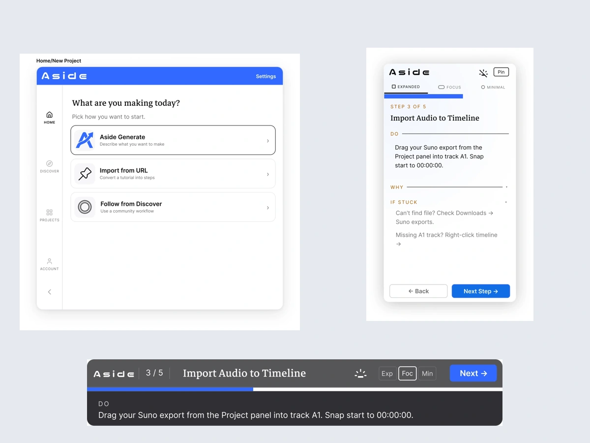

低干扰
指导在旁边出现，把主要空间留给创作工具。
桌面应用概念 / 2026
把教程带进创作现场，让学习与操作在同一个地方发生。
在 Figma 中查看工作流规划、悬浮引导与不同显示模式。

SYSTEM LAYER + WORK LAYER / ASIDEAside 面向有明确创作目标、但不熟悉创作软件的初学者。项目以制作音乐视频为例，探索如何将 Suno、Sora 和 Premiere Pro 的操作组织为连续步骤，用桌面应用规划流程，再通过悬浮层提供当前步骤的指导。
本案例基于 Final Paper、Project Screens 与 Style Guide。自动生成、导入教程和跨软件悬浮引导是设计概念；当前交付物为 Figma 原型与设计文档。
在文字或视频教程与创作软件之间切换，意味着用户需要暂时离开任务、记住步骤，再回到软件中操作。Aside 的设计从这个断点出发，让当前指令与当前任务保持在一起。
指导在旁边出现，把主要空间留给创作工具。
从目标到步骤，再到实际操作，保持任务上下文。
使用一致的文字逻辑，让用户快速找到当前指令。
System Layer 负责创建、浏览和管理工作流；Work Layer 负责创作中的即时指引。把复杂选择留在独立窗口，让悬浮层聚焦当前任务。
Aside Generate 接收创作目标；Import from URL 将教程转成步骤；Discover 提供社区工作流。不同入口汇入同一个分步执行逻辑。
Expanded 展示完整指令，Focus 用横向窄条保留当前操作，Minimal 只保留紧凑状态与进度。深浅两种外观适配不同工作环境。
用 DO、WHY、IF STUCK 区分操作、原因与帮助；以字号、字重、字距和透明度组织信息，在两层界面中维持一致逻辑。
设计过程围绕内容、结构、布局和字体展开：从需要展示的信息出发，在反馈中调整线框，再把不同尺寸和外观统一为一套系统。
先明确目标输入、工具、难度、工作流阶段，以及当前步骤、操作指令、解释、异常帮助与进度，再为这些内容分配层级。Paper 指出，先定义内容比视觉完成后再调整字体更有效。
Paper 记录了根据反馈持续修改线框草图，并加入 System Layer，让创建与管理工作流有独立空间，实际操作时再切换到 Work Layer。
结合纵向完整面板与横向紧凑布局，再引入不同尺寸、Minimal 模式和浅色外观，让指导在不同占用空间下仍保留重点。
明确 Nico Moji、Markazi Text 与 Inter 的职责，用字号、字重、间距和透明度建立共享层级。同时围绕 WCAG AA 对比度目标，调整颜色、文字透明度和浅色外观。
示例目标是一支 60 秒、夜间驾驶氛围的音乐视频：从概念与情绪板，经过 Suno 音频、Sora 视觉、Premiere Pro 剪辑，直到导出与分享。Projects 与 Account 页面则承接项目状态、个人工作流和收藏。
切换 System Layer 与 Work Layer；点击原始设计图可放大。Work Layer 的窄面板是桌面悬浮层。
用目标生成、教程导入或社区工作流开始创作。
把创作意图、工具组合与熟练度集中在一个输入步骤。
在启动前理解五个阶段与当前进度。
按工具浏览现成流程，复用创作方法。
区分进行中与已完成，保留继续任务的线索。
整理自己的工作流、编辑分享入口与收藏。
完整展示当前步骤、DO、WHY 与 IF STUCK。
在浅色工作环境中保留完整信息层级。
横向窄条聚焦当前操作与下一步。
减少界面占用，同时保持操作指令可见。
紧凑显示当前任务、进度和模式切换。
以最少的信息保留任务上下文。
Nico Moji 用于品牌标识，Markazi Text 用于步骤标题，Inter 用于 UI 与正文。System Layer 的次级文字使用 60% 透明度，深色 Work Layer 使用 80%；视觉重点通过层级变化建立。两层界面共享字体逻辑，但分别适配规划时的舒适阅读与操作时的紧凑显示。
蓝色品牌色、暖色提示与中性背景。
用同一套信息逻辑适配不同显示密度。
Paper 的主要收获是：字体不是最后的装饰，而是指导系统的一部分。先明确内容，再建立层级；任何字号、字距或透明度的变化，都会影响用户如何识别当前操作。
Paper 提出继续探索随交互变化的可变字体。基于当前概念，后续也可验证悬浮层是否减少窗口切换、三种模式能否被理解，以及小字号和透明度在真实桌面环境中的可读性。以上属于后续验证方向，尚无结果数据。